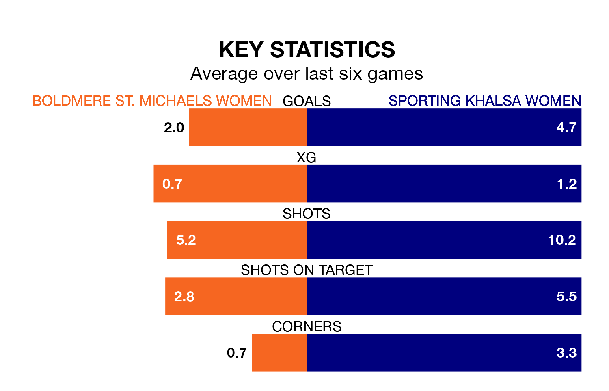

Boldmere St. Michaels Women host Sporting Khalsa Women in Tuesday's late match looking to bounce back from defeat last time out in the Women's National League Division One Midlands.
Boldmere St. Michaels, who sit second in the league after 14 games, fell to a 0-2 home defeat to Lincoln City LFC on February 11.
They face a Sporting side who also lost their last match, a 3-1 defeat to Loughborough Lightning Women, and who sit fourth in the table.
With 49 goals in 12 games so far this season, Sporting are the league's highest scorers with 4.1 goals per game. And they are conceding fewer than average, letting in 15 goals at a rate of 1.2 per game.
Boldmere St. Michaels are also above average scorers, with 2.0 goals per game, compared to a league average of 1.8. They have conceded 1.0 goal per game.
The hosts are in exceptional form in the Women's National League Division One Midlands, with six wins and no losses from their last six games.
With four wins and a draw over that period, the away side's form is worse – they have taken 13 points from 18, compared to Boldmere St. Michaels's 18.
In the last five years, Boldmere St. Michaels and Sporting have played each other on four occasions. They won two each.
On average, Boldmere St. Michaels scored 1.8 goals and Sporting 2.0 in those matches.
Their last meeting was on September 6, when Boldmere St. Michaels won 3-2 away.
Updated: 12:18 (UTC), 19/02/24